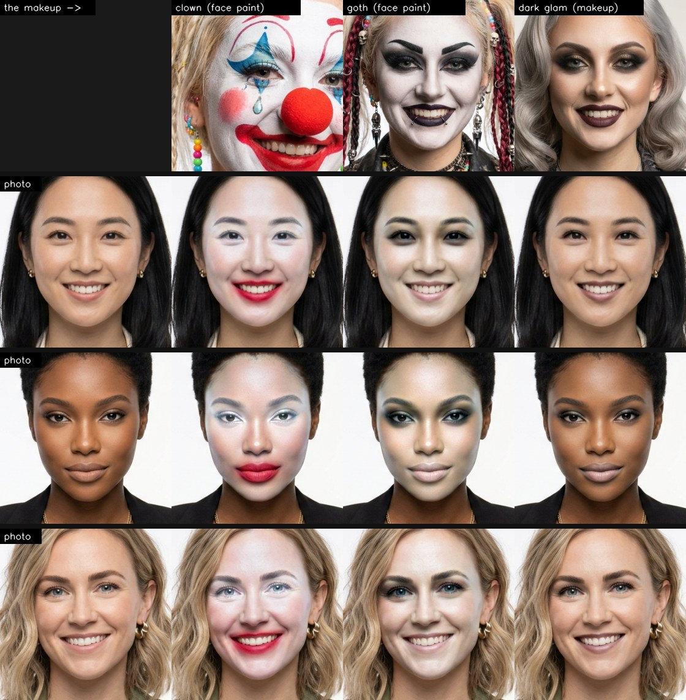
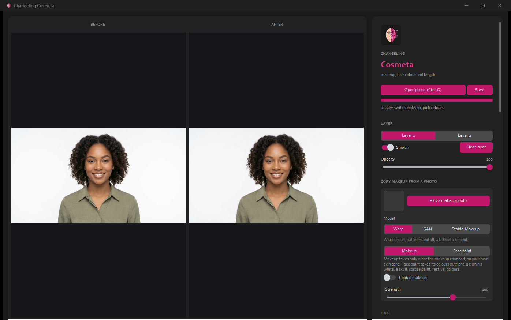

What it looks like
Makeup; copper, platinum and electric blue hair; a ginger beard, a shave, grey hair and beard; stubble, and the editor. Every face is an AI-generated person who doesn't exist. Click to enlarge.
Copy makeup from a photo
The top row is the makeup; each row below is a person wearing it. Face paint takes the whole face, white base and all; Makeup keeps her own skin tone. The reference's face is warped onto hers triangle by triangle, so stars, skulls, cracks and dots land where they were. Click to enlarge.

Use it
- Start
run.bat(orrun.ps1,run.sh). The first run sets itself up (Python 3.11, no GPU needed) and fetches the face parser (about 90 MB). - Open photo: the face is read once, in a few seconds.
- Switch looks on, pick colours, slide; every change shows at once. Save writes the full-size result.

The looks
| Hair | 11 colours or any colour |
| Face | lips (with gloss), eyeshadow, eyeliner, blush, brows, smooth skin |
| Facial hair | beard colour, stubble, shave |
| Editor | brightness, contrast, saturation, warmth, vignette, sharpen |
Layers and AetherCanvas
Two layers stack, each with its own looks, editor and opacity. Hair length and style, a full beard or a clean shave go to AetherCanvas AI when it's running.